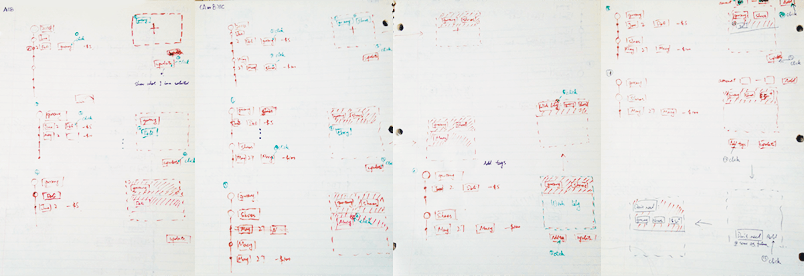
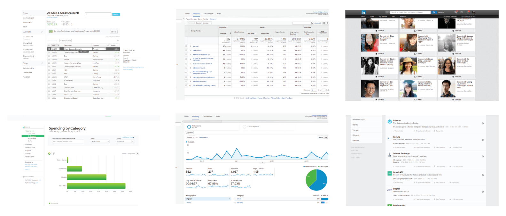
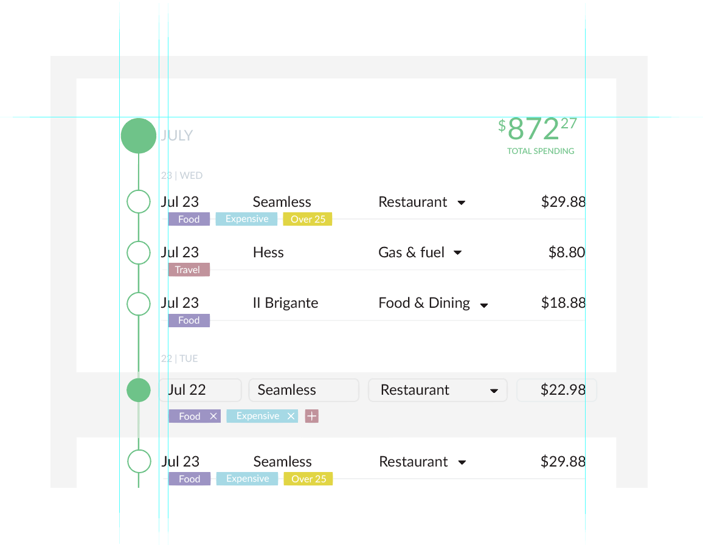
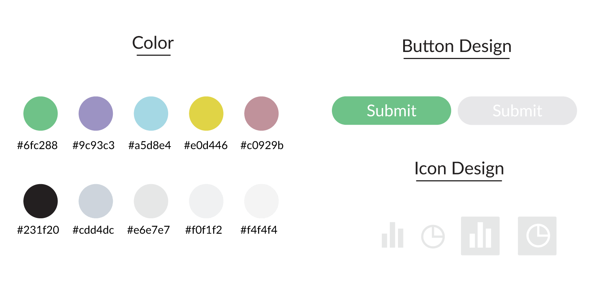
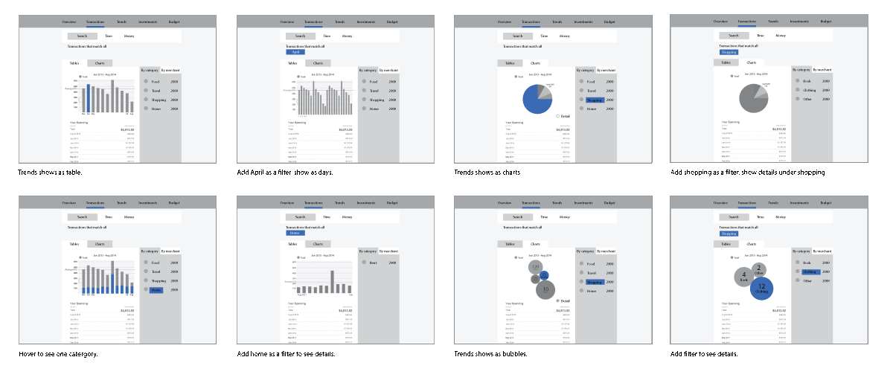
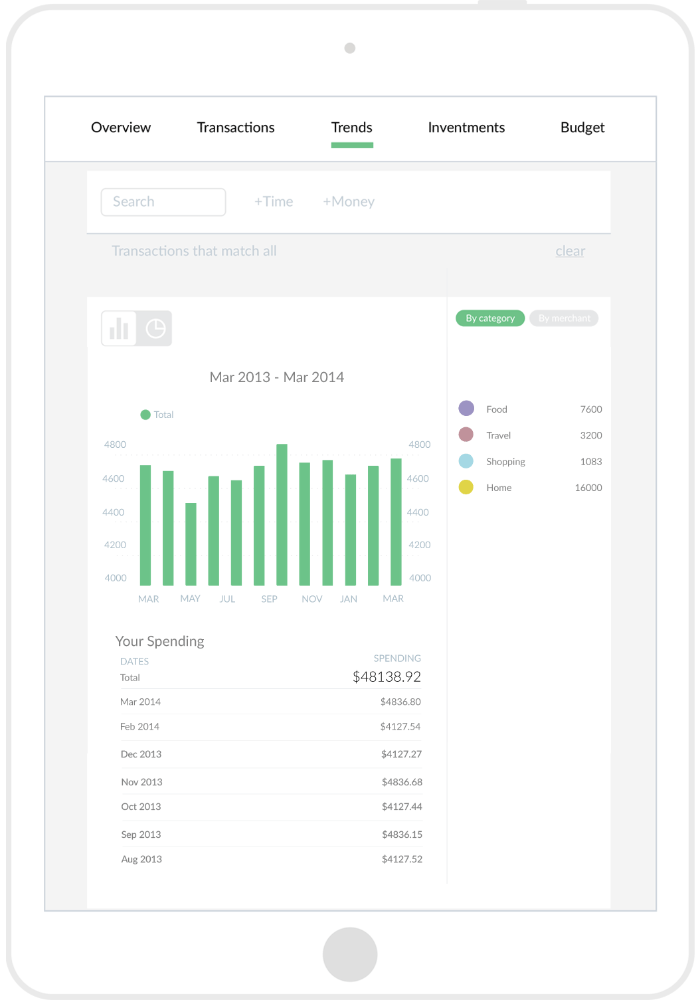
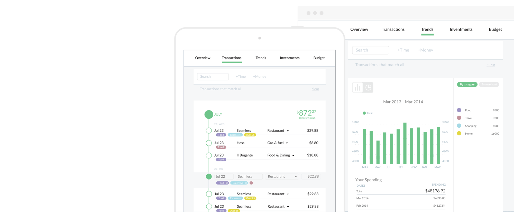

Pefin
UX design of transaction management
UX design and prototype | June 2014-December 2015
All the UI was designed for web and I displayed it on iPad since I was just displaying the part I designed.
-
I worked at Pefin as a UX designer for 6 months, and was in charge of two core functions design among five. One was designing the process of interacting with the transactions, the other was visualizing the data of trends.
-
I want to know how much I spend
on my wedding.Based on our clients’ feedback, costumed tags could be added to transactions and be used as filters to check the total amount. So we had to figure out the logic behind the filters chosen.
-

Logic comes the first.
To make the logic clear, I created two kinds of filter pools. One was for Must-have tags, and the other was for May-have tags. So users can have see any combination of filters. Later, we found it was too complicated for users so we saved it for advanced settings.
Quick sketch for different scenarios
-

Design comes the next.
Traditional table lists and chats
Based on the researches, we decided to do the user interface of transactions as a table list. After studying the presidents, I found most of the table lists were boring and lack of structure, kind of a web-version excel. So I transformed part of the information into visual that can be understood immediately and users canfocus on the transactions without distraction.
Space is better than lines.
I removed the boxes around the elements to make a more clean user interface.
Different sizes are for different layers.
Users could get more clear with the what transactions were made each day by taking a glimpse at the bubble tree.
Use colors properly.
Same color would be used for the same tag. I made a list of colors which matches each other nicely.
To make it more fresh and friendly, I used low saturated color and made a mechanism to select the colors to the filters. ( I would never say any task is easy after realizing the connections between an element to the whole product.)
Other colors were not be presented here.
-

It’s always fun to play with data.
The web pages were designed with both bar chart and pie chart for different needs.
Based on our user testing, people took twice more time on the page when the chart was interactive. So we made animation to made the chart more interesting.
Some bars going slower is for more attention from users and I’m glad people like this design :)
-

Making pixels perfect.
I didn’t have the chance finish the product, and I would love to show you more however this project was under NDA. Here’s only a sneak peak. Please contact me for more details.
-
-
If you'd like to share your feedback about this project, comment it on Medium .